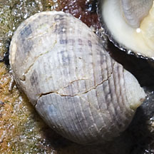
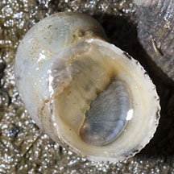
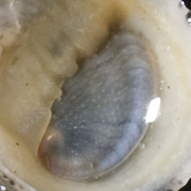

|
|
| shelled snails text index | photo index |
| Phylum Mollusca > Class Gastropoda > Family Neritidae |
| Grey
mangrove nerite snail Nerita undulata Family Neritidae updated Sep 2020 Where seen?This snail is sometimes seen in large numbers in mangroves. The study by Tan & Clements (2008) found this snail on mangrove tree trunks and roots, among and under rocks in interior or coastal fringes in mangroves. Sites included: Seletar Dam, Khatib Bongsu, Lim Chu Kang, Punggol and Pulau Ketam. It was previously known as Nerita grayana. Features: 1.5-2cm. Shell thick heavy, hemispherical, the spire sticks out more prominently than other nerites found in Singapore. Thin, regular well-developed spiralling ribs. Shell colour purplish brown also pale, often with a pattern of three darker spirals. The flat underside may be smooth or wrinkled, white to yellowish or with orange tinge. Square notched 'teeth' (3-4) on the straight edge at the shell opening, the uppermost one is squarish. Tiny or no 'tooth' on one side of the shell opening. Operculum thick, evenly covered in tiny bumps, grayish with beige patches. Body creamy white with dark tentacles. Sometimes confused with Waved nerites which are not found in mangroves and have one distinctly large 'tooth' on one side of the shell opening which the Grey mangrove nerite does not. |
 Kranji, Mar 13 |
 |
 |
| Grey mangrove nerite snails on Singapore shores |
On wildsingapore
flickr
|
|
References
|